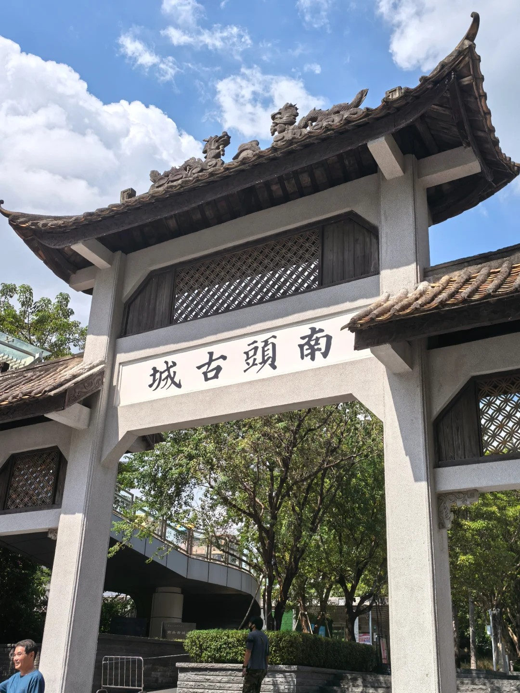

Futian Village
One of the few urban villages in Shenzhen that still preserves Lingnan-style arcade buildings. The alleys hide breakfast spots that have been open for over a decade. Rice noodle rolls, salty fried dough, and pork offal porridge—you can get full for just 5 RMB. The early morning alleys are filled with the vibrant life of locals. No internet-famous shops, just the most authentic Shenzhen.

Dongmen Old Street
The oldest commercial street in Shenzhen. A century of history is hidden within its arcades and old shops. On one side are trendy boutiques, and on the other are time-honored brands spanning decades. Licorice fruits, takoyaki, and Chaoshan kueh—you can taste street food for just a dozen RMB. What you're exploring is not only the lively buzz but the very memories of Shenzhen's development.

Shekou Old Street
A coastal old neighborhood where fishing boats anchor by the shore, and the sea breeze mixes with the fresh scent of seafood. The street-side seafood stalls, herbal tea shops, and sweet soup dessert places are regular spots for locals. Sitting on a stone bench by the sea, having a bowl of sweet soup, and watching the boats go by offers a rare slow-paced side of Shenzhen.

Nantou Ancient City
Shenzhen's oldest district. Beneath the millennia-old city walls, avant-garde artsy shops blend perfectly with traditional Cantonese flavors. Wandering through the cobblestone alleys, drinking a pour-over coffee, and trying a bite of traditional sweet soup—the local vibe here exudes a charming, artistic aura.